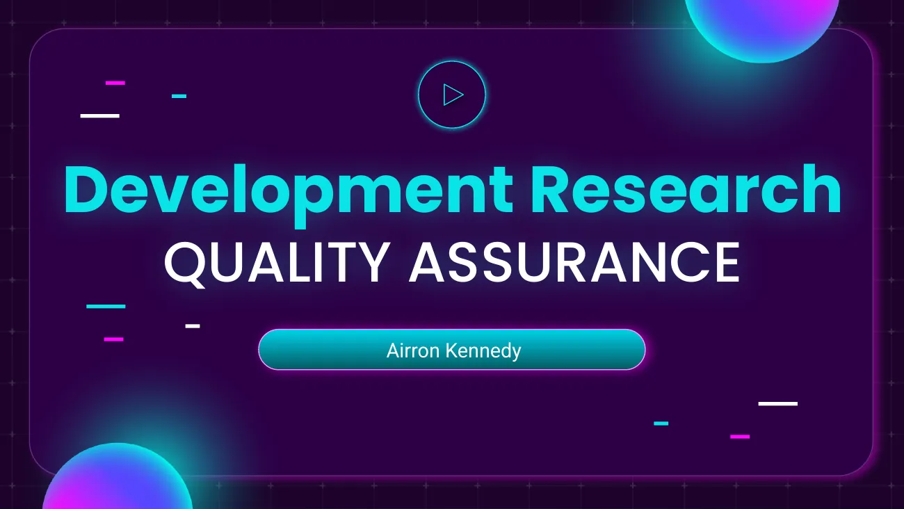
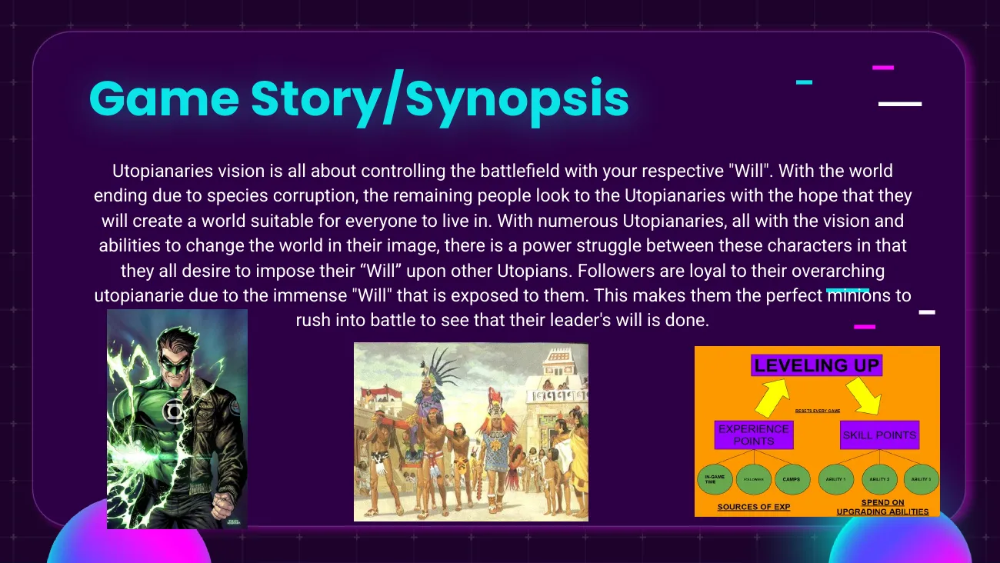
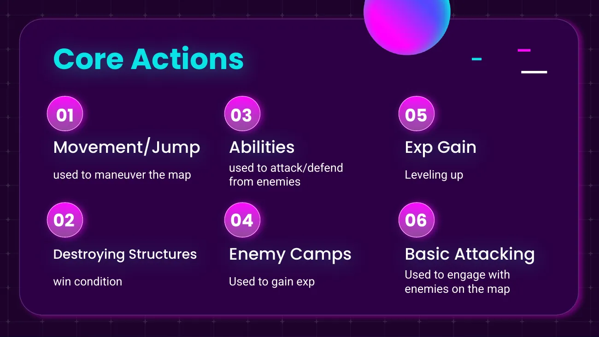
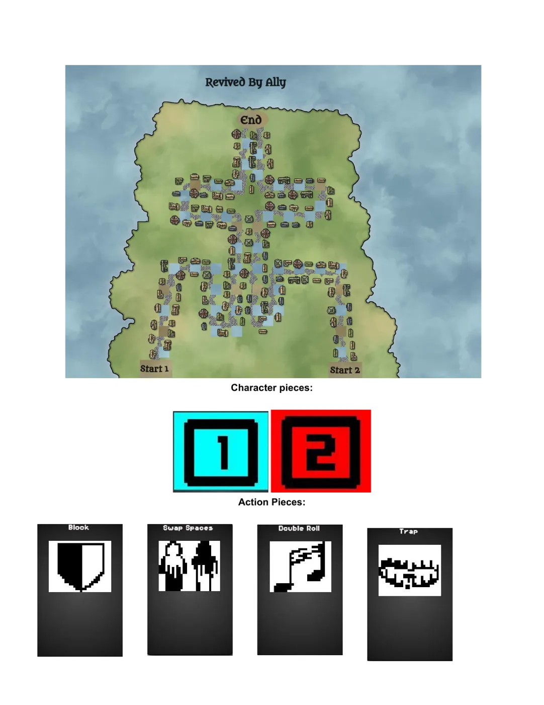
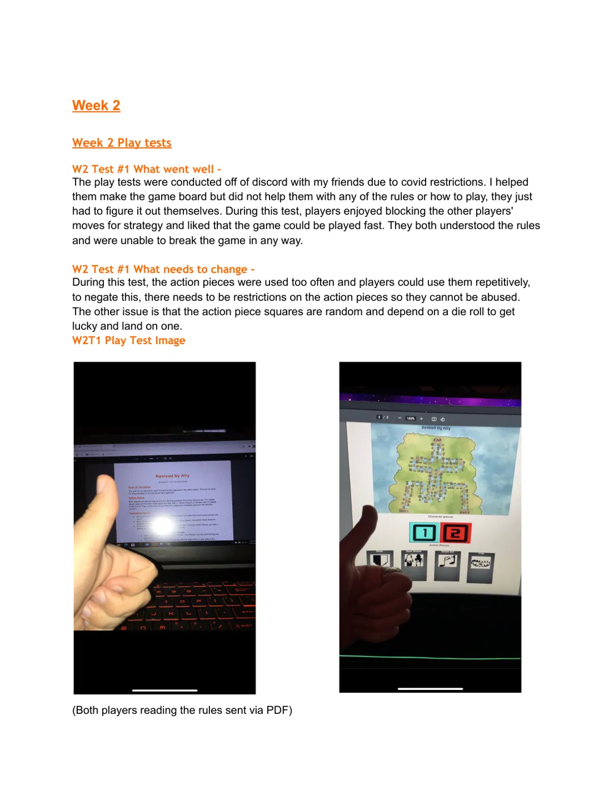
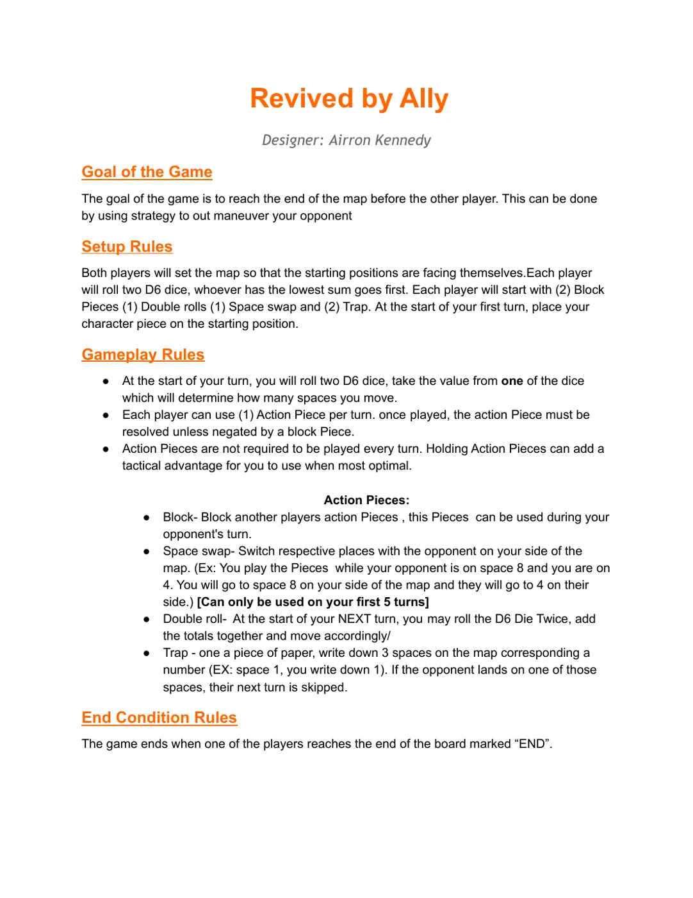

Team digital prototype · 2022
Arena Battler
Concept & Blueprint scripting
A rogue-like arena FPS built to test a complex system where time is the currency. Across five rounds of enemy waves, players earn currency and must choose between spending it on upgrades or saving it for more time. I created the high concept and prototype pitch, scripted the core mechanics in Blueprints, and produced the mechanic iterations, gameplay flowchart, and weekly gameplay videos.
Read the postmortem →



Team GDD & QA research · 2022
Utopianaries' Vision
Game designer (team) · QA research
An FPS/MOBA hybrid about controlling the battlefield: fast first-person combat paired with MOBA progression, leveling, structures, and jungle camps. The team design document covers the high concept, audience, systems, level design, UI wireframes, and narrative. My QA development research breaks the game's goals and core actions down into features and testable requirements, such as the enemy AI system.



Tabletop systems design · 2021
Revived by Ally
Solo designer
A two-player race game of dice and tactical action pieces: Block, Space Swap, Double Roll, and Trap. A weekly playtest journal tracks the iteration. Early tests showed players could stall an opponent for four turns in a row, so I reworked piece effects and limits to cut repeated turn-skipping and keep both players in the game.
UX research · 2022
Battletoads Game Testing Study
Co-researcher (team of three)
A usability study of how the Battletoads remaster teaches its first-act mechanics, like invincibility, charge attacks, and healing. Ten participants played 30-minute sessions under controlled conditions (same controller, difficulty, setup, and audio), with pre- and post-session surveys. The team then analyzed the results against our hypotheses about onboarding.
Applied thesis · 2023
NPCs and Player Flow
Researcher & author
My master's capstone research on how non-player characters can be designed to induce and enhance flow, Csikszentmihalyi's state of complete engagement. It traces NPCs from tabletop roots to today's lifelike characters and connects AI design choices to player immersion.